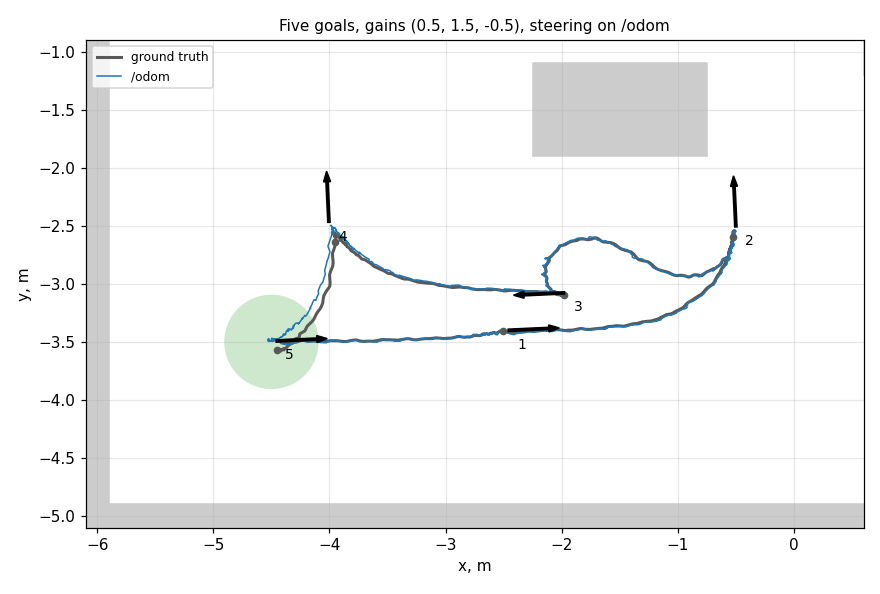
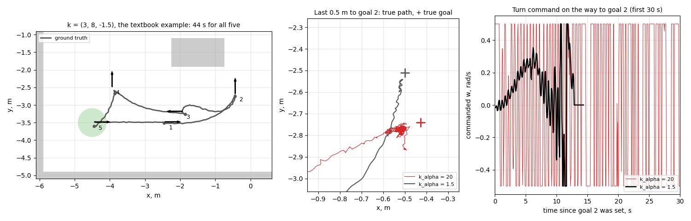

Move it · Project 4
Your own go-to-pose controller
Goal
Write a node that walks the Go2 to a pose (a position and a heading) using only /odom, with the polar-coordinate controller
from the mobile-robotics textbooks. You send it to five poses in open space, measure how far from each it stops, both as
/odom sees it and as the simulator's ground truth sees it, and plot the paths. Then you raise the gains, watch the robot
hunt around the goal instead of arriving, and measure why it does.
What you will learn
- Describing the robot relative to a goal pose with three numbers: distance ρ (rho), bearing α (alpha) and goal angle β (beta).
- Turning those into a velocity command v = k_ρ ρ, w = k_α α + k_β β, and checking the gains against a stability condition.
- Saturating a command to the robot's limits without bending the path it would have taken.
- Handling what the textbook model leaves out: goals behind the robot, a minimum walking speed, and the final heading.
- Telling controller error from estimation error by scoring the same run on
/odomand on/odom_gt. - Why gains that are stable on paper, and in an ideal simulation, make a legged robot hunt.
Before you start
You need project 1 (starting the stack, /cmd_vel, reading a pose from
nav_msgs/Odometry) and project 3 (closing the loop on /odom, wrap, a timer on
simulated time, /odom drift while the robot stands). The video step reuses project 3's record.py.
Every terminal starts with:
cd go2-nav-sim
source env.sh
Start the stack:
scripts/up.sh
# stack up
Run each experiment right after scripts/up.sh, so the robot starts on marker A facing +x and /odom has not drifted.
The five goals are given relative to the start pose and lie within 4.0 m ahead and 1.0 m to the left of it. From A that is
open floor: the nearest obstacle, the pallet centred at (-1.5, -1.5), has its corner 0.84 m from goal 2. That holds on
the path the robot takes when every goal ends done. A goal that ends in timeout leaves the robot where it stopped,
possibly turned far from the goal heading, and the path to the next goal starts there and can cross the pallet (Try
this 3 explains how a reader's robot ended up against it).
| File | What it does |
|---|---|
polar.py |
the controller: polar(), saturate(), strong_stability() and the GoToPose state machine; no ROS in it |
go_to_pose.py |
the node: runs the goals in turn on /odom, publishes /cmd_vel, prints the errors, logs every 20 Hz tick to results/NAME.csv (--name, default my_run) |
analyze.py |
scores the logs per goal, prints the tables, draws figures/trajectories.png and figures/gains.png from my logs, or figures/my_trajectories.png and figures/my_gains.png from yours with --mine |
test_polar.py |
unit tests: the controller driving an ideal unicycle |
results/ |
my 11 logs (run, repeat, repeat2, on_odom_gt, on_odom_gt_2, high_gains, k_alpha_20, k_alpha_20_2, k_alpha_20_3, no_vmin, no_vmin_2) and analyze_output.txt |
The node is one process, so there is no launch file.
Your logs go to results/my_*.csv and your figures to figures/my_*.png, so the tables and figures in this README keep
matching the files they came from. Every command below already uses a my_ name. A --name without my_ (for example
--name run) overwrites my log of that name.
Steps
1. Run the unit tests
python3 -m pytest -q projects/p04_go-to-pose
# 5 passed
The tests drive GoToPose on an ideal unicycle (it does exactly what it is commanded, 20 times a second). They check the
polar coordinates on one hand-worked case, that saturate() keeps the ratio w/v, that the default gains pass the stability
test, that goals ahead, to the side and behind are all reached within 5 cm and 3 degrees without exceeding 0.3 m/s or
0.5 rad/s, and that a goal behind the robot is reached walking backward.
Check: 5 passed.
2. Walk to the five goals
scripts/up.sh
python3 projects/p04_go-to-pose/go_to_pose.py
The node waits for /odom and /odom_gt, takes the pose at that moment as the start, and walks to these goals, given as
(x forward, y left, heading in degrees) relative to the start:
| Goal | 1 | 2 | 3 | 4 | 5 |
|---|---|---|---|---|---|
| Pose | (2.0, 0.0, 0) | (4.0, 0.8, 90) | (2.5, 0.3, 180) | (0.5, 1.0, 90) | (0.0, 0.0, 0) |
They make it go straight, curve left onto a heading, back up to a point behind it, cross back, and back up to the start (goals 3 and 5 lie behind the robot when they are set, so it walks to them backward). After each goal it stands for 1.5 s and prints the error. My run:
[INFO] [...] [go_to_pose]: gains k_rho=0.5 k_alpha=1.5 k_beta=-0.5, strongly stable: True
[INFO] [...] [go_to_pose]: start at odom (...)
[INFO] [...] [go_to_pose]: goal 1 (2.0, 0.0, 0): done after 10.2 s; error on odom 0.052 m +0.9 deg, true 0.046 m -0.5 deg
[INFO] [...] [go_to_pose]: goal 2 (4.0, 0.8, 90): done after 12.9 s; error on odom 0.095 m -0.9 deg, true 0.087 m -3.4 deg
[INFO] [...] [go_to_pose]: goal 3 (2.5, 0.3, 180): done after 12.8 s; error on odom 0.022 m -2.1 deg, true 0.023 m -6.0 deg
[INFO] [...] [go_to_pose]: goal 4 (0.5, 1.0, 90): done after 12.7 s; error on odom 0.092 m +1.4 deg, true 0.179 m -5.4 deg
[INFO] [...] [go_to_pose]: goal 5 (0.0, 0.0, 0): done after 6.2 s; error on odom 0.060 m +2.8 deg, true 0.081 m -5.4 deg
log: .../projects/p04_go-to-pose/results/run.csv
I logged mine with --name run; yours goes to results/my_run.csv. "error on odom" is what the controller believes;
"true" compares /odom_gt with the same goal placed at the true start pose.
To stop the robot early, press Ctrl-C in the node's terminal. The node sends zero velocity before it exits, prints
interrupted: sending zero velocity and the log: line, and the robot stands still. I interrupted this step at 7.0 s,
while the robot walked at 0.105 m/s: in the next 35 s its true position moved 0.02 m. If the robot ever keeps walking
after the node has gone (CHAMP repeats the last command it received), send zero from any terminal:
ros2 topic pub -t 5 /cmd_vel geometry_msgs/msg/Twist {}
Check: five done lines (not timeout), each goal in about 5 to 14 s of simulated time (5.7 to 13.2 s in my runs and
a reader's).
3. Score the run and draw it
python3 projects/p04_go-to-pose/analyze.py --mine
It prints one table per log of yours, two measurements used in How the code works, and writes
figures/my_trajectories.png. figures/my_gains.png needs your logs from steps 4 and 5 as well; until then the script
prints skipped figures/my_gains.png. analyze.py without --mine scores my logs and redraws the figures in this README.
The first lines with my log:
run
| Goal | Time, s | Outcome | /odom error at end of drive, m | /odom error, m | deg | True error, m | deg | True path, m | Turn reversals |
|---|---|---|---|---|---|---|---|---|---|
| 1 | 10.2 | done | 0.050 | 0.052 | +0.9 | 0.046 | -0.5 | 2.11 | 5 |
...
Columns:
- Time: from the first logged row of the goal to the first
donerow. The node's own time counts from the tick before, so it can differ by 0.1 s (12.9 against 12.8 s for goal 2). /odomerror at end of drive: the distance on/odomwhen the controller switched from walking to turning on the spot./odomerror and True error: when the node printed them, 1.5 s afterdone.- True path: length of the
/odom_gtpath for that goal. - Turn reversals: how often the commanded w changed sign, counting only commands above 0.25 rad/s.
Check: five rows with outcome done, and figures/my_trajectories.png.
4. Try the textbook gains
scripts/up.sh
python3 projects/p04_go-to-pose/go_to_pose.py --name my_high_gains --gains 3 8 -1.5
k = (3, 8, -1.5) is the example in Siegwart et al. (reference in polar.py). My run:
[INFO] [...] [go_to_pose]: gains k_rho=3.0 k_alpha=8.0 k_beta=-1.5, strongly stable: True
[INFO] [...] [go_to_pose]: goal 1 (2.0, 0.0, 0): done after 7.0 s; error on odom 0.045 m -5.0 deg, true 0.032 m -4.3 deg
[INFO] [...] [go_to_pose]: goal 2 (4.0, 0.8, 90): done after 9.4 s; error on odom 0.080 m -3.3 deg, true 0.073 m -2.8 deg
[INFO] [...] [go_to_pose]: goal 3 (2.5, 0.3, 180): done after 12.0 s; error on odom 0.092 m -3.0 deg, true 0.110 m -4.5 deg
[INFO] [...] [go_to_pose]: goal 4 (0.5, 1.0, 90): done after 10.2 s; error on odom 0.111 m +2.8 deg, true 0.201 m -6.4 deg
[INFO] [...] [go_to_pose]: goal 5 (0.0, 0.0, 0): done after 5.7 s; error on odom 0.089 m +0.9 deg, true 0.118 m -9.7 deg
Check: all five done, faster than step 2 (44.0 s against 54.6 s in my runs).
5. Measure a gain that is too high
Keep k_ρ and k_β, raise k_α from 1.5 to 20. This run takes 2.5 to 8 minutes, because each of the five goals can hunt until the 90 s timeout. Keep the Gazebo window in view while it runs. If the robot walks off the open floor between marker A and the pallet, press Ctrl-C: the node sends zero velocity and the robot stops (step 2).
scripts/up.sh
python3 projects/p04_go-to-pose/go_to_pose.py --name my_k_alpha_20 --gains 0.5 20 -0.5
The outcome changes from run to run. In two of my three runs (k_alpha_20, k_alpha_20_2) all five goals ended
done, in 155.0 and 155.7 s in total. The third (k_alpha_20_3) took 281.1 s, and goals 2 and 4 ended in timeout:
[INFO] [...] [go_to_pose]: gains k_rho=0.5 k_alpha=20.0 k_beta=-0.5, strongly stable: True
[INFO] [...] [go_to_pose]: goal 1 (2.0, 0.0, 0): done after 43.4 s; error on odom 0.075 m -2.5 deg, true 0.095 m -6.9 deg
[INFO] [...] [go_to_pose]: goal 2 (4.0, 0.8, 90): timeout after 90.1 s; error on odom 0.144 m -85.2 deg, true 0.143 m -85.6 deg
[INFO] [...] [go_to_pose]: goal 3 (2.5, 0.3, 180): done after 13.4 s; error on odom 0.182 m -1.2 deg, true 0.163 m -2.4 deg
[INFO] [...] [go_to_pose]: goal 4 (0.5, 1.0, 90): timeout after 90.1 s; error on odom 0.081 m +69.4 deg, true 0.083 m +47.2 deg
[INFO] [...] [go_to_pose]: goal 5 (0.0, 0.0, 0): done after 44.5 s; error on odom 0.167 m -2.8 deg, true 0.290 m +37.5 deg
The stability test still says True, yet in this run the goals took 13 to 90 s instead of about 5 to 14, and two were never
reached. Near each goal the robot turns left and right in place while barely moving forward. A timeout in this step is
part of the result: the hunt lasted longer than 90 s.
Minutes of turning in place also spoil the /odom heading. /odom takes x and y from the lidar odometry and the
heading from integrating the IMU's yaw rate (src/go2_nav_sim/config/ekf.yaml), and that integral drifts while the robot turns. In
k_alpha_20_3 the /odom heading had drifted 41 degrees from the true heading by goal 5, which is why goal 5 reports
-2.8 degrees on /odom and +37.5 degrees true (with the default gains the drift over a whole run was 10, 10 and 11
degrees in repeat, repeat2 and run). Once the gap is large, the controller steers by a heading that points the
wrong way and walks away from the goal; a reader's run walked about 10 m backward across the arena on goal 5 this way.
The node stops this: when /odom puts the robot 0.5 m further from the goal than when the goal was set, it ends the
goal with abort, prints a warning and skips the remaining goals. Restart the stack after an abort.
Score your runs:
python3 projects/p04_go-to-pose/analyze.py --mine
Check: in the my_k_alpha_20 table, Turn reversals is in the hundreds (448, 477 and 802 in my three runs, against 14 for
run), and the line my_k_alpha_20, goal 2: within 0.3 m after ... shows tens of seconds spent within 0.3 m of the
goal (56.2 s in k_alpha_20, 78.8 s in k_alpha_20_3, but 11.3 s in k_alpha_20_2, where goal 1 hunted for 65.9 s
instead). figures/my_gains.png is drawn once you also have my_high_gains from step 4.
6. Record a video
Restart the stack in the first terminal:
scripts/up.sh
In a second terminal, start the recorder:
python3 projects/p03_move-in-shapes/record.py /tmp/p04_raw.mp4 --topic /spectator/cam/image_raw
Back in the first terminal, run step 2 again. When it prints log: ..., stop the recorder with Ctrl-C. My recording ran
68.3 s (683 frames at 10 per second of simulated time). Crop the corner of the arena the robot uses and play it at three
times the speed:
ffmpeg -i /tmp/p04_raw.mp4 -vf "crop=480:270:110:170,scale=960:540,setpts=PTS/3" -r 20 -c:v libx264 -crf 26 -pix_fmt yuv420p -an /tmp/five_goals.mp4
ffprobe -v error -show_entries format=duration -of default=noprint_wrappers=1 /tmp/five_goals.mp4
# duration=22.850000
Check: the duration is about a third of the recording.
7. Stop everything
scripts/stop.sh
How the code works
Polar coordinates
polar.py describes the robot relative to the goal with three numbers:
def polar(x, y, yaw, gx, gy, gyaw):
"""Robot pose (x, y, yaw) and goal pose (gx, gy, gyaw) in one frame -> (rho, alpha, beta)."""
rho = math.hypot(gx - x, gy - y)
bearing = math.atan2(gy - y, gx - x)
return rho, wrap(bearing - yaw), wrap(gyaw - bearing)
- ρ is the distance to the goal position.
- α is how far the goal lies off the robot's nose: the bearing of the line robot → goal minus the robot's heading.
- β is how far the goal heading is from that line.
The robot is on the goal pose when ρ = 0 and its heading equals the goal heading. wrap keeps both angles in (-π, π],
as in project 3.
The control law and its gains
v = k_ρ ρ
w = k_α α + k_β β
v closes the distance. k_α α turns the nose toward the goal. k_β β (with k_β < 0) turns it away from the straight line, so
the robot swings out and arrives along the goal heading instead of only at the goal point. Linearised around the goal, the
closed loop is stable when k_ρ > 0, k_β < 0 and k_α - k_ρ > 0. strong_stability() tests the stricter condition from the
same book, under which the robot also never reverses its direction of travel on the way:
def strong_stability(k_rho, k_alpha, k_beta):
return k_rho > 0 and k_beta < 0 and k_alpha + 5 / 3 * k_beta - 2 / math.pi * k_rho > 0
For the default gains (0.5, 1.5, -0.5): 1.5 - 0.83 - 0.32 = 0.35 > 0. How I chose them:
- k_ρ = 0.5 s⁻¹: v = 0.5 ρ reaches the 0.3 m/s limit for ρ > 0.6 m, so the robot walks at full speed until the last 0.6 m and then slows with a 1/k_ρ = 2 s time constant.
- k_α = 1.5 s⁻¹: a bearing error of 19 degrees asks for the full 0.5 rad/s. The trunk's heading sways with every step (next section); 1.5 times that sway is about 0.06 rad/s of noise on w.
- k_β = -0.5 s⁻¹: with k_ρ = 0.5 and k_α = 1.5 the strong condition holds for k_β > -0.71, and -0.5 leaves a margin of 0.35. Try this 2 shows what β does.
Saturation that keeps the path
The robot accepts at most 0.3 m/s and 0.5 rad/s. Clipping each one alone changes the ratio w/v, which is the curvature of
the path. saturate() scales both by the same factor:
def saturate(v, w, v_max=V_MAX, w_max=W_MAX):
s = max(1.0, abs(v) / v_max, abs(w) / w_max)
return v / s, w / s
The robot then walks the same curve, slower. This has a consequence for high gains: whenever w is saturated, v shrinks with it. That is what stalls the robot in step 5.
What the textbook leaves out
GoToPose.step() wraps the law in a small state machine, drive → align → done:
if self.phase == 'drive':
rho, alpha, _ = polar(x, y, yaw, gx, gy, gyaw)
if self.direction is None: # chosen once per goal: forward if the goal is in front, else backward
self.direction = 1 if abs(alpha) <= math.pi / 2 else -1
if rho < self.pos_tol:
self.phase = 'align'
else:
flip = 0.0 if self.direction > 0 else math.pi # walking backward = forward with the heading flipped
rho, alpha, beta = polar(x, y, yaw + flip, gx, gy, gyaw + flip)
v, w = self.direction * self.k[0] * rho, self.k[1] * alpha + self.k[2] * beta
up = max(1.0, self.v_min / abs(v)) # CHAMP barely walks below 0.1 m/s: scale up, same ratio w/v
v, w = saturate(v * up, w * up)
return v, w, 'drive'
if self.phase == 'align':
err = wrap(gyaw - yaw)
if abs(err) < self.yaw_tol:
self.phase = 'done'
else:
w = max(-W_MAX, min(W_MAX, 1.5 * err))
return 0.0, math.copysign(max(abs(w), self.w_min), err), 'align'
- Goal behind. The law assumes the goal lies ahead (|α| ≤ 90 degrees). For a goal behind, the controller walks backward:
it computes the coordinates with the robot's heading and the goal heading turned by 180 degrees, and negates v. The
direction is chosen once per goal, so it cannot flip back and forth on the way. Goals 3 and 5 are reached this way: in
results/run.csvtheirv_cmdgoes down to -0.300. - Speed floor. v = k_ρ ρ falls below 0.1 m/s at ρ = 0.2 m. The gait makes little progress at such speeds:
Try this 3 removes the floor, and a goal then either stands 0.06 to 0.12 m short until the 90 s timeout
(goal 1 of
no_vmin) or creeps the last centimetres and endsdonelate (goal 1 ofno_vmin_2). So v and w are scaled up together until v is 0.1 m/s.saturate()runs after that, so a saturated w can still pull v below 0.1 (the lowest forwardv_cmdinrunwas 0.027 m/s). - Final heading. The robot reaches the 5 cm circle before its heading has come round: at the end of the drive phase the
heading in
runwas off by +10, -23, -29, +49 and +47 degrees for goals 1 to 5 (ideal unicycle, Try this 2: -6 degrees). Thealignphase turns the rest on the spot with w = 1.5 · err, at least 0.1 rad/s, until the error is under 3 degrees.
The node
go_to_pose.py runs everything from one 20 Hz timer on simulated time, as in project 3. Each tick it steps the controller on
the latest /odom pose, publishes the command, logs the row, and after 1.5 s in done prints the errors and starts the next
goal:
v, w, phase = self.ctl.step(*self.odom)
if phase == 'drive' and errors(self.odom, self.target)[0] > self.d0 + LEASH:
phase = 'abort'
elif phase not in ('done', 'abort') and t - self.t_goal > TIMEOUT:
phase = 'timeout'
if phase in ('timeout', 'abort'):
v, w = 0.0, 0.0
self.ctl.phase = phase
tw = Twist(); tw.linear.x, tw.angular.z = float(v), float(w)
self.pub.publish(tw)
self.log.writerow([...])
if phase in ('done', 'timeout', 'abort'):
self.t_done = self.t_done or t
if t - self.t_done >= SETTLE:
self.report(t, phase)
The goals are placed once, at the start, by rotating them with the start heading a0 and shifting them to the start position:
x' = x0 + x cos a0 - y sin a0, y' = y0 + x sin a0 + y cos a0 (place()). This is done twice, with the /odom start pose for
the controller and with the /odom_gt start pose for scoring. /odom_gt is never used for control.
stop() publishes five zero twists, because CHAMP keeps walking on the last command. main() calls it in a finally
block, so it runs on a normal end, on Ctrl-C, on kill -TERM and on an exception:
rclpy.init(signal_handler_options=SignalHandlerOptions.NO)
signal.signal(signal.SIGTERM, signal.default_int_handler)
node = Runner(args)
try:
while not node.done:
rclpy.spin_once(node, timeout_sec=0.1)
except KeyboardInterrupt:
node.get_logger().warn('interrupted: sending zero velocity')
finally:
node.stop()
The first line matters. By default rclpy.init() installs its own Ctrl-C handler, which shuts the ROS context down
before Python raises KeyboardInterrupt. stop() then fails with RCLError: Failed to publish: publisher's context is
invalid, no zero twist goes out, and the robot keeps walking. A reader hit exactly this with the first version of the
node: the robot walked on for about 35 s until they published zero by hand. With SignalHandlerOptions.NO Ctrl-C is a
plain KeyboardInterrupt, the context is still valid in stop(), and the second line makes kill -TERM behave the
same way.
d0 is the /odom distance to the goal when the goal was set, and LEASH is 0.5 m. In my 11 logs in results/, with
all the gains in this project, the distance never grew by more than 0.03 m above d0, so the leash only trips when the
robot walks away from the goal. It does not catch a robot that pushes against an obstacle: its distance to the goal
stays about where it was (If it goes wrong). After abort, report() skips the remaining goals, because the controller would steer
to them on the same /odom heading that has just failed.
Why k_α = 20 hunts
On paper k = (0.5, 20, -0.5) is fine: strong_stability returns True (20 - 0.83 - 0.32 > 0), and on the ideal unicycle it
reaches every test goal:
python3 -c "
import sys; sys.path.insert(0, 'projects/p04_go-to-pose'); import polar, test_polar
print(polar.strong_stability(0.5, 20, -0.5), [test_polar.simulate(g, gains=(0.5, 20, -0.5))[0].phase for g in [(2, 0, 0), (2, 1, 1.57), (-1.5, 0.5, 0)]])"
# True ['done', 'done', 'done']
The legged robot differs from that model in one way that matters here: its trunk does not point steadily along its path.
analyze.py measures the sway while walking straight to goal 1 (1 to 5 s, slow heading change removed):
run: /odom heading sway walking straight (1-5 s): peak to peak 9.0 deg, std 2.3 deg
run: true heading sway walking straight (1-5 s): peak to peak 6.9 deg, std 2.2 deg
α is computed from that heading, so the controller passes the sway straight into w: 2.3 degrees (0.040 rad) times
k_α = 1.5 is 0.06 rad/s, times k_α = 20 is 0.80 rad/s, above the 0.5 rad/s limit. Near the goal it gets worse, because α
is the bearing to a point that is only centimetres away: with the goal 0.1 m ahead, a 2 cm sideways step of the trunk
changes α by atan(0.02 / 0.1) = 11 degrees. With k_α = 20 the command flips between +0.5 and -0.5 rad/s, and saturate()
cuts v by the same factor:
run, goal 2: within 0.3 m after 8.0 s, then 3.7 s of drive with median v 0.10 m/s and |w| at the 0.5 rad/s limit 16% of the time
k_alpha_20, goal 2: within 0.3 m after 11.9 s, then 56.2 s of drive with median v 0.02 m/s and |w| at the 0.5 rad/s limit 89% of the time
The default gains show the same effect, smaller: in the last 0.1 m to goal 2 the command swung to ±0.5 rad/s for about a second before the drive phase ended (right panel of the second figure). The cure there is the 5 cm tolerance, not a lower gain.
Results
All runs on one machine with other simulations running, each right after a fresh scripts/up.sh. Produced by
python3 projects/p04_go-to-pose/analyze.py; the full output is in results/analyze_output.txt, the logs in results/*.csv.

Ground truth is grey, /odom blue (drawn from the true start pose, so the gap between the two is the estimate's drift),
goal poses black arrows, the point where the error was taken a grey dot, marker A (the start) a green disc of 0.4 m
radius. The paths separate on the way to goal 4 and back
to the start: at goal 4, /odom put the robot 0.092 m from the goal, the truth was 0.179 m.
The same run from the spectator camera, cropped and played at three times the speed (22.9 s).
Per goal, default gains (run):
| Goal | Time, s | /odom error at end of drive, m | /odom error, m | /odom heading error, deg | True error, m | True heading error, deg |
|---|---|---|---|---|---|---|
| 1 (2.0, 0.0, 0) | 10.2 | 0.050 | 0.052 | +0.9 | 0.046 | -0.5 |
| 2 (4.0, 0.8, 90) | 12.8 | 0.043 | 0.095 | -0.9 | 0.087 | -3.4 |
| 3 (2.5, 0.3, 180) | 12.8 | 0.047 | 0.022 | -2.1 | 0.023 | -6.0 |
| 4 (0.5, 1.0, 90) | 12.6 | 0.042 | 0.092 | +1.4 | 0.179 | -5.4 |
| 5 (0.0, 0.0, 0) | 6.1 | 0.037 | 0.060 | +2.8 | 0.081 | -5.4 |
All runs, per run (mean over the goals, heading as mean of the absolute error):
| Run | Command | Goals done | Total time, s | /odom error at end of drive, m | /odom error, m | True error, m | True heading error, deg | True path, m | Turn reversals |
|---|---|---|---|---|---|---|---|---|---|
run |
go_to_pose.py --name run |
5 of 5 | 54.6 | 0.044 | 0.064 | 0.083 | 4.1 | 10.73 | 14 |
repeat |
go_to_pose.py --name repeat |
5 of 5 | 53.8 | 0.045 | 0.045 | 0.039 | 3.7 | 10.62 | 18 |
repeat2 |
go_to_pose.py --name repeat2 |
5 of 5 | 52.8 | 0.047 | 0.044 | 0.043 | 3.7 | 10.61 | 16 |
on_odom_gt |
... --name on_odom_gt --ros-args -r odom:=odom_gt |
5 of 5 | 52.1 | 0.048 | 0.044 | 0.044 | 1.9 | 10.65 | 10 |
on_odom_gt_2 |
same, --name on_odom_gt_2 |
5 of 5 | 52.1 | 0.047 | 0.031 | 0.031 | 1.5 | 10.64 | 15 |
high_gains |
... --gains 3 8 -1.5 |
5 of 5 | 44.0 | 0.042 | 0.083 | 0.107 | 5.6 | 10.28 | 9 |
k_alpha_20 |
... --gains 0.5 20 -0.5 |
5 of 5 | 155.0 | 0.045 | 0.107 | 0.116 | 5.9 | 14.70 | 448 |
k_alpha_20_2 |
same, --name k_alpha_20_2 |
5 of 5 | 155.7 | 0.045 | 0.097 | 0.101 | 16.3 | 14.52 | 477 |
k_alpha_20_3 |
same, --name k_alpha_20_3 |
3 of 5 | 281.1 | 0.081 | 0.130 | 0.155 | 35.9 | 21.61 | 802 |
no_vmin |
... --v-min 0 --goals 1 2 |
0 of 2 | 180.0 | 0.100 | 0.094 | 0.056 | 53.2 | 10.44 | 42 |
no_vmin_2 |
same, --name no_vmin_2 |
1 of 2 | 104.3 | 0.073 | 0.082 | 0.072 | 16.7 | 7.59 | 43 |
For a goal that ended in timeout, "error at end of drive" is the error at the timeout.
What the numbers say:
- The controller does what it is asked on
/odom: every drive phase ended within the 5 cm tolerance (0.037 to 0.050 m). - The error grows after that, during the turn on the spot, which was 10 to 49 degrees long (How the code works, final
heading). Goal 2: 0.043 m at the end of the drive, 0.095 m after
alignturned the robot 23 degrees onto the goal heading. Project 3 found the same: the gait turns about a point that is not the trunk origin. - The true heading error changes from run to run. In my three runs with the default gains (
run,repeat,repeat2) all 15 true heading errors were negative (-0.5 to -6.9 degrees, mean of the absolute error 4.1, 3.7 and 3.7 degrees) while/odomreported -2.6 to +2.8 degrees: the/odomheading drifts during the run. A reader's two runs gave 8.1 and 3.1 degrees, with one error of +2.6, so expect a spread of a few degrees around these numbers. Steering on ground truth gave 1.9 and 1.5 degrees in two runs (on_odom_gt,on_odom_gt_2) with errors of both signs, about half of the/odomruns. The position error does not improve in proportion (mean 0.044 and 0.031 m, against 0.039 to 0.083 m), because the turn on the spot still moves the trunk. - The textbook gains are 10.6 s faster over the five goals, because v = 3ρ stays at the 0.3 m/s limit until ρ < 0.1 m. They end with larger errors (0.107 m true against 0.083 and 0.039 m). With saturation on both, the gains mainly decide where the robot starts to slow down.
- k_α = 20 took 155.0, 155.7 and 281.1 s in my three runs, against 52.8 to 54.6 s with the default gains, and walked
3.8 to 10.9 m further (14.70, 14.52 and 21.61 m against 10.73 m), almost all of it stamping near the goals. A hunt
ends when the sway happens to carry the trunk inside the 5 cm tolerance, or at the 90 s timeout: the same goal 1 took
32.1, 80.4 and 43.4 s in the three runs, and goals 2 and 4 of
k_alpha_20_3timed out. The true heading error grows with the hunting (mean 5.9, 16.3 and 35.9 degrees), because the/odomheading drifts while the robot turns (step 5). - Two runs with the same gains (
run,repeat) differ by 0.044 m in mean true error and 0.8 s in total time, so single differences of a few centimetres between the other rows are not meaningful.

Try this
- Close the loop on ground truth. Remap the topic the node reads, so it steers on the simulator's true pose:
bash
scripts/up.sh
python3 projects/p04_go-to-pose/go_to_pose.py --name my_on_odom_gt --ros-args -r odom:=odom_gt
python3 projects/p04_go-to-pose/analyze.py my_on_odom_gt
Both subscriptions now read /odom_gt, so "error on odom" and "true" print the same numbers. Expected outcome: the true
heading errors shrink to a few degrees of either sign (mine: -0.7, -3.0, -2.7, +1.8, +1.5) instead of all being
negative, and the position errors do not shrink, because the turn on the spot still moves the trunk (goal 4: 0.050 m at
the end of the drive, 0.080 m after the turn).
- Find out what k_β does, without the robot. This runs the controller on the ideal unicycle to the goal (2, 1, 90 degrees)
and prints the heading error at the moment the drive phase ends, before
alignfixes it:
bash
python3 - <<'EOF'
import sys, math; sys.path.insert(0, 'projects/p04_go-to-pose'); import polar
for k in [(0.5, 1.5, -0.5), (0.5, 1.5, 0.0), (0.5, 1.5, 0.5), (3, 8, -1.5)]:
ctl, x, y, yaw, t = polar.GoToPose((2, 1, math.pi / 2), k), 0.0, 0.0, 0.0, 0.0
while ctl.phase == 'drive':
v, w, _ = ctl.step(x, y, yaw)
x, y, yaw, t = x + v * math.cos(yaw) * 0.05, y + v * math.sin(yaw) * 0.05, yaw + w * 0.05, t + 0.05
print(k, polar.strong_stability(*k), f'drive ended after {t:.1f} s, heading error {math.degrees(polar.wrap(yaw - math.pi / 2)):+.0f} deg')
EOF
Before running it, predict which line arrives closest to 90 degrees. Answer:
(0.5, 1.5, -0.5) True drive ended after 9.9 s, heading error -6 deg
(0.5, 1.5, 0.0) False drive ended after 9.3 s, heading error -49 deg
(0.5, 1.5, 0.5) False drive ended after 17.4 s, heading error -141 deg
(3, 8, -1.5) True drive ended after 7.8 s, heading error -16 deg
Without β (k_β = 0) the law is "aim at the point" and arrives 49 degrees off; with the wrong sign it arrives facing
almost backward, after a detour. Every one of these still reaches done, because align turns the rest on the spot.
On the Go2 that turn costs position (Results), so a good k_β is worth having.
- Remove the speed floor. Run goal 1 with
--v-min 0:
bash
scripts/up.sh
python3 projects/p04_go-to-pose/go_to_pose.py --name my_no_vmin --v-min 0 --goals 1
Watch the robot in Gazebo while it runs, and press Ctrl-C if it heads for an obstacle (step 2).
Expected outcome: goal 1 either stalls 6 to 12 cm short until the 90 s timeout, or creeps the last centimetres at
0.02 to 0.10 m/s and ends done late. Which one happens changes from run to run. My run of this command:
[INFO] [...] [go_to_pose]: goal 1 (2.0, 0.0, 0): done after 17.7 s; error on odom 0.058 m +2.2 deg, true 0.065 m +3.9 deg
The robot was 0.20 m short at 7.5 s, crept to 0.08 m short by 14 s with v_cmd 0.04 m/s, stayed 0.07 m short for 3 s
and then ended done (awk -F, '$2==1' projects/p04_go-to-pose/results/my_no_vmin.csv shows v_cmd and x). The two
logs in results/ come from an earlier version of this step that ran goals 1 and 2. In no_vmin, goal 1 got to
about 0.1 m short within 12 s and then stayed 0.06 to 0.12 m short for the remaining 79 s, with v = k_ρ ρ = 0.04 to
0.05 m/s, stepping without moving forward, until the 90 s timeout ended it. In no_vmin_2, goal 1 crept from 0.20 m
to 0.05 m short in 7 s at 0.03 to 0.10 m/s and ended done after 14.3 s. Either way the floor-free goal takes 14 to
90 s, against 9 to 13 s with the floor.
Why only goal 1: goal 2 starts wherever goal 1 left the robot. After a timeout that can be far off the goal
heading. A reader's goal 1 timed out with the robot facing about -75 degrees, which put goal 2 behind it. The robot
then walked backward on an arc to the north, into the pallet, and kept backing at -0.3 m/s against it, 0.21 to 0.37 m
from its corner, until goal 2 timed out 90 s later. The 0.5 m leash did not trip, because pushing against the pallet
does not take the robot further from the goal.
If it goes wrong
| Symptom | Cause | Fix |
|---|---|---|
scripts/up.sh prints TIMEOUT waiting for: gazebo, and go_to_pose.py then prints its gains ... line and nothing more |
Gazebo did not come up within its wait. It happened to me once in nine starts, with a load average of about 100 on a 32-core machine. The node waits silently for /odom and /odom_gt |
Stop the node with Ctrl-C, run scripts/up.sh again, and check ros2 topic echo --once /odom before starting the node |
A goal prints abort and a warning walking away from the goal on /odom, and the remaining goals are skipped |
/odom put the robot 0.5 m further from the goal than when the goal was set. The /odom heading has drifted away from the true heading (it is integrated from the IMU's yaw rate), so the controller steers the wrong way. Long turning in place at k_α = 20 causes this (step 5) |
Run scripts/up.sh again, which resets /odom, before the next run. If the robot is heading for a wall before the node notices, press Ctrl-C in the node's terminal; it sends zero velocity before it exits |
| The robot turns left and right in place near a goal, and the goal takes tens of seconds | k_α too high: the trunk's heading sway is multiplied into w, w saturates, and saturate() cuts v with it (step 5) |
Keep k_α · (heading sway) well below the 0.5 rad/s limit: with 2.3 degrees of sway, k_α = 1.5 gives 0.06 rad/s |
The robot walks into an obstacle and keeps pushing against it, and no abort comes |
The leash only measures how far /odom puts the robot from the goal, and pushing against an obstacle does not change that much; the lidar odometry also jumps while the trunk is against a box. It happens when a goal starts from where a timed-out goal left the robot (Try this 3) |
Press Ctrl-C in the node's terminal, or run ros2 topic pub -t 5 /cmd_vel geometry_msgs/msg/Twist {}, then scripts/up.sh before the next run |
The robot stops 5 to 10 cm short and the goal ends in timeout |
v = k_ρ ρ below the speed at which the gait makes progress | Keep the 0.1 m/s floor (--v-min, default 0.1); Try this 3 |
| "error on odom" is 0.08 to 0.11 m although the tolerance is 5 cm | The turn on the spot in align moved the trunk: goal 2 of run, 0.043 m at the end of the drive, 0.095 m after the turn |
Expected with this gait. Compare the /odom error at end of drive column in analyze.py with the final one to see it |
| The true heading error is several degrees, always of the same sign, while "error on odom" is within 3 degrees | /odom heading drift; the controller cannot correct what it cannot see |
Restart before each run (project 3); confirm with Try this 1 |
analyze.py showed Time 0.0 s for goals 2 to 5 |
In my first version the node switched to the next goal before writing the row, so the first row of each goal still carried the previous goal's done |
tick() now writes the row first and calls report() after it |
| The goals come out rotated or shifted against the arena | The goals are relative to where the robot stands when the node starts | Run right after scripts/up.sh, so the start is marker A facing +x |
Ctrl-C on the recorder prints a traceback ending in ExternalShutdownException |
rclpy's own signal handler shuts the context down first | Harmless: my recording stopped this way was complete (679 frames, 67.9 s). kill -TERM <pid> exits cleanly and prints the frame count |